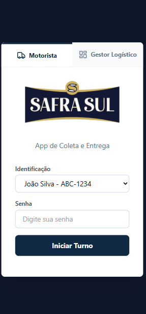
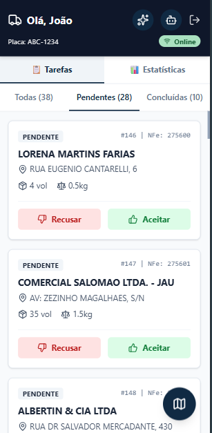
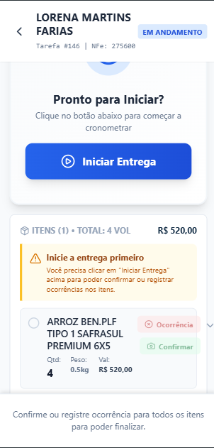
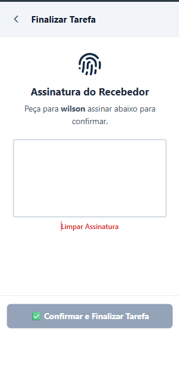
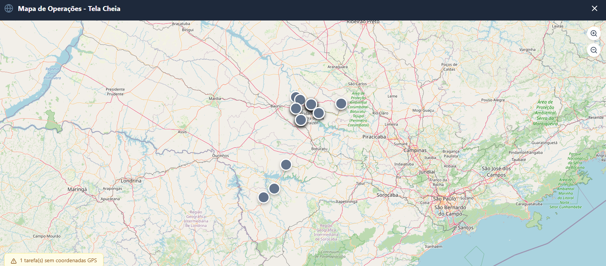

Imagine que você tem uma loja que precisa entregar muitos produtos para várias pessoas diferentes. Este
sistema é como um ajudante super inteligente que:
Organiza todas as entregas
Mostra no mapa onde cada motorista está
Ajuda os motoristas a encontrar o caminho mais rápido
Guarda todas as informações importantes (como fotos e assinaturas)
👥 Quem usa este sistema?
🚛 Motorista (Entregador): É a pessoa que dirige o caminhão ou carro e faz as
entregas.
👔 Gestor (Chefe): É a pessoa que fica no escritório organizando tudo e vendo como
está indo o trabalho.
🔐 Como entrar no sistema?
Passo 1: Abrir o sistema
Abra o programa no seu computador ou celular. Você vai ver uma tela bonita com um desenho de caminhão 🚚

Tela de login do sistema
Passo 2: Fazer login
Digite seu nome de usuário (é como seu apelido no sistema)
Digite sua senha (é como uma senha secreta, só você sabe!)
Clique no botão "Entrar"
💡
Dica: Se você esqueceu sua senha, peça ajuda para o gestor!
🚛 Manual para MOTORISTAS
📱 Tela Principal
Quando você entra, vai ver uma tela parecida com esta:

Tela principal do motorista com mapa e lista de entregas
1. 🗺️ Mapa Grande
Mostra onde você está (pontinho azul), onde precisa ir (bandeirinhas) e o caminho a seguir.
2. 📋 Lista de Entregas
Logo abaixo do mapa, você vê todas as suas entregas do dia em cartõezinhos coloridos:
🔴 Vermelho (ALTA) = Muito urgente! Entregue primeiro!
🟡 Amarelo (NORMAL) = Pode entregar depois das urgentes
🟢 Verde (BAIXA) = Entregue por último
📦 Como fazer uma entrega?
Passo 1: Escolher e Visualizar
Clique no cartão da entrega que quer fazer. A tela vai mudar e mostrar todos os detalhes.

Tela de detalhes de uma entrega
Passo 2: Navegar e Iniciar
Clique em "Ver no Mapa Completo" para ver o caminho.
Quando chegar, clique em "Iniciar Tarefa" ▶️.
Passo 3: Finalizar e Assinar
Depois de entregar os produtos e tirar a foto do comprovante, peça para o cliente assinar:

Tela de captura de assinatura
❌ Não conseguiu entregar?
Se o cliente não estava ou teve algum problema:
Clique em "Falhar Tarefa" ❌
Escreva o motivo (ex: "Portão fechado")
Tire uma foto se precisar
👔 Manual para GESTORES
📊 Tela de Operações
Aqui você vê tudo acontecendo em tempo real:

Mapa de operações mostrando todos os motoristas e rotas
O que você pode fazer aqui?
Ver todos os motoristas: Cada um com uma cor diferente no mapa.
Monitorar entregas: Veja quais estão atrasadas ou pendentes.
Filtrar: Veja apenas as entregas urgentes ou de um motorista específico.
📥 Importar Notas (XML)
O jeito mais fácil de adicionar entregas:
Clique em "Central de Integração"
Selecione o Motorista
Arraste os arquivos XML das notas fiscais
Confirme a importação!
🆘 Dúvidas Frequentes
"Não consigo tirar foto no celular"
O navegador vai pedir permissão para usar a câmera. Você precisa clicar em
"Permitir". Se negou antes, vá nas configurações do navegador para liberar.
"Estou sem internet, e agora?"
Relaxa! O sistema guarda seus dados e envia tudo assim que a internet voltar. Pode continuar
trabalhando normalmente.
"Como adiciono um novo motorista?"
Vá em "Gerenciar Motoristas" > "Adicionar" e preencha os dados
básicos (Nome, Usuário, Senha, Placa).